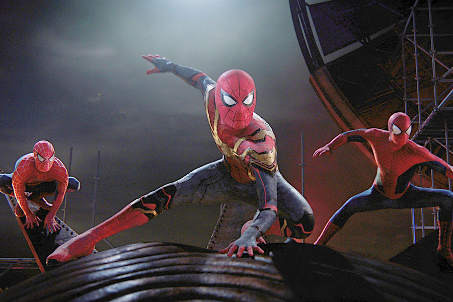

This movie is way different then the first two Spider-Man actors, as in this Spider-Man movie they have no background story told and he made his first appearance in Captain Amercia: Civil War. This Spider-Man has no uncle Ben or a Harry Obsborn as instead his best friend in this movie is Ned Leads. He also make several appearances in other hero movies as Spider-Man. Tom Holland's Spider-Man was the 3rd Movie of Spider-Man movies ever in theaters. Tom Holland said "playing he isn't ready to stop playing Spider-Man, But he did say after he's 30 he wants to stop playing Spider-Man. Tom Hollnad's Spider-Man : No Way Home movie had the highest grossing movie of all Spider-Man movies with $1.88 billion. He wants to keep playing Spider-Man in future MCU movies that why they are coming out with a fourth movie of his. Tom Holland will be the first Spider-Man actor to have his own fourth Spider-Man movie.
